Tout ce que vous pouvez faire avec l'application, une tâche à la fois : des étapes courtes, des images animées tirées de l'application, et les icônes que vous verrez à l'écran.
Vous n'avez jamais touché à un outil de montage ? Parfait — ce guide est écrit pour vous. Deepotus Video Gen transforme une idée en vidéo verticale prête à poster, sans logiciel à apprendre. Tout tourne sur votre ordinateur ; vous branchez vos propres clés API (vous payez vos fournisseurs, pas l'application).
Cinq façons de fabriquer une vidéo, de la plus simple à la plus riche :
① une image animée en clip cinématique (Seedance) · ② un avatar qui parle votre script (HeyGen) · ③ votre propre vidéo filmée au téléphone (UGC) · ④ une composition qui combine plusieurs sources (Templates ou Studio) · ⑤ tout un chapitre de roman narré transformé en vidéo illustrée (Épisodes). Ajoutez par-dessus voix off et musique de fond, puis le Scheduler planifie et publie tout seul.
Double-cliquez l'icône Deepotus Video Gen sur le Bureau. L'application démarre en silencieux (aucune fenêtre noire), puis votre navigateur s'ouvre sur le studio. Au tout premier lancement, un assistant en 5 étapes vous guide : persona, fournisseurs, canaux. Vous pouvez le rejouer à tout moment (palette de commandes ⌘K → « Replay onboarding »).
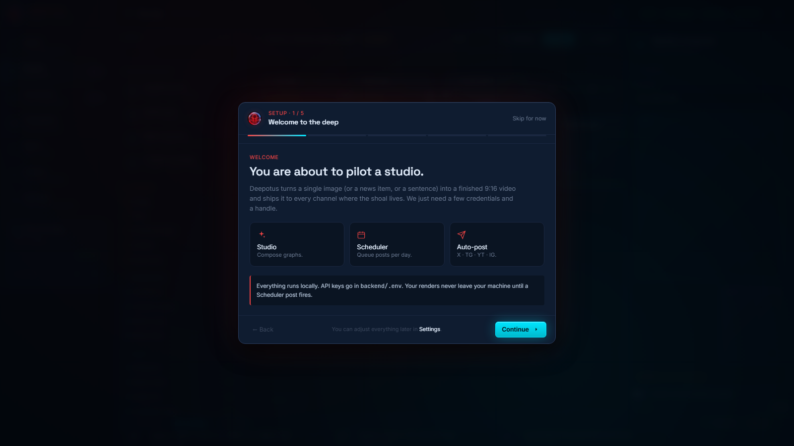
L'assistant de premier lancement. L'étape « Generators » liste vos fournisseurs, dont l'option Ollama (LLM local).
1
L'application fonctionne en BYO keys (« apportez vos clés ») : vous utilisez vos propres comptes API. Une seule est obligatoire pour commencer — fal.ai (elle fait les images et les clips vidéo). Créez-la sur fal.ai/dashboard/keys.
2
Collez vos clés dans Settings → API keys, bouton Save, puis redémarrez l'app. Les pastilles en haut à droite (fal / heygen / voice) passent au vert quand une clé est active.
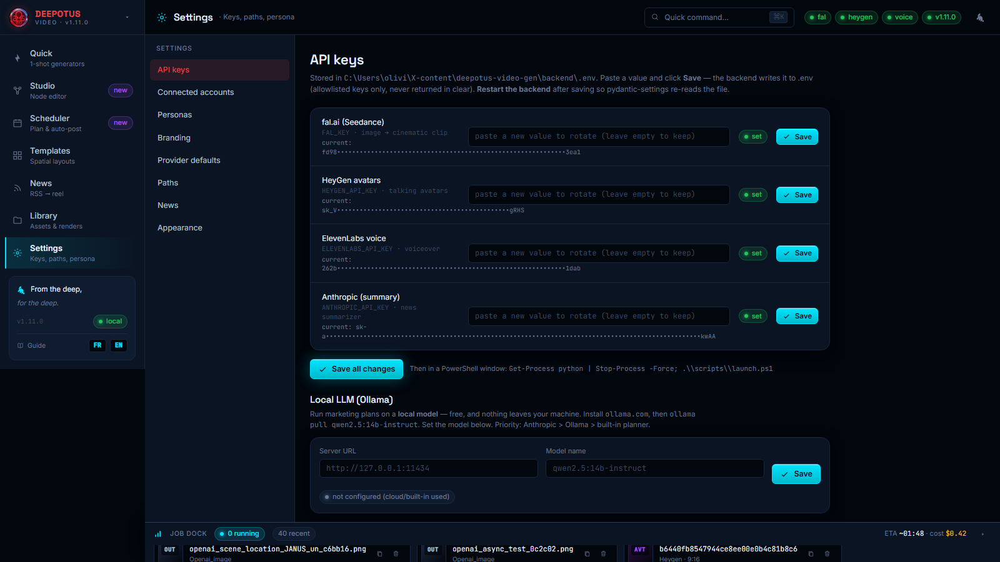
Settings → API keys : chaque clé a un champ, un statut et un bouton Save. En bas, la carte Local LLM (Ollama) (chapitre 11).
Images (FLUX) et clips vidéo (Seedance) — la seule clé indispensable pour démarrer.
HeyGen
Optionnel
Avatars parlants (vidéo type ②) et compositions avatar + clip.
ElevenLabs
Optionnel
Voix off / narration — pour vos vidéos UGC et la fonction Épisodes (chapitre 7), enregistrée directement dans la bibliothèque audio.
Anthropic, OpenAI ou Gemini (une seule suffit)
Optionnel
Résumés d'actu, plans marketing et scripts réellement écrits par IA (News, Studio & storyboards d'Épisodes). Sans clé : version déterministe (gabarits de marque).
Ollama (LLM local)
Optionnel
Mêmes usages IA que ci-dessus, 100 % local et gratuit (chapitre 11).
X (4 clés)
Optionnel
Publication automatique sur X/Twitter (chapitre 12).
Telegram (bot token)
Optionnel
Publication automatique sur un canal Telegram.
Astuce : commencez avec fal.ai seule, puis ajoutez des clés au fur et à mesure que vous explorez avatars, voix off, IA et publication.
Les coûts sont facturés par vos fournisseurs, pas par l'application. Surveillez vos crédits sur leurs tableaux de bord. Vos clés, vos fichiers et votre base restent sur votre machine (dossier %LOCALAPPDATA%\DeepotusVideoGenData) — ils survivent aux mises à jour et réinstallations.
Plusieurs usages font appel à un modèle de langage : le résumé d'actualités (News), la génération de plans marketing (Scheduler) et les storyboards d'Épisodes (le découpage « Par l'IA »). Depuis la v1.15, vous choisissez le fournisseur pour chacun.
Collez la ou les clés voulues dans Settings → API keys : Anthropic (Claude), OpenAI (GPT) et/ou Google Gemini. Il suffit d'une seule pour activer le résumé et les plans IA ; renseignez-en plusieurs si vous voulez pouvoir basculer.
Modèle Gemini : par défaut l'app utilise gemini-flash-latest, l'alias stable de Google qui suit automatiquement la dernière version Flash — rien à faire. Pour figer une version précise (ex. gemini-2.0-flash), remplissez le champ « Gemini — modèle » dans Settings → API keys puis redémarrez le backend. La même clé Gemini sert aussi aux modèles vidéo Google natifs (Veo 3.1) du Studio.
1
Dans Settings → Provider defaults, choisissez par rôle (résumeur, planificateur) le fournisseur à utiliser via un menu déroulant. Un rôle n'est marqué « missing » que si aucun de ses fournisseurs possibles n'a de clé.
2
Bascule automatique : si le fournisseur choisi est indisponible (clé absente, panne), l'app passe au suivant disponible — vous n'êtes jamais bloqué.
Priorité des moteurs : votre choix dans Provider defaults d'abord, puis l'ordre par défaut Anthropic → OpenAI → Gemini → Ollama → planificateur intégré (déterministe). Le badge du plan indique le moteur réellement utilisé.
Le persona est la voix de votre marque : il alimente les plans marketing, les scripts d'avatar et le générateur de prompts. Allez dans Settings → Personas.
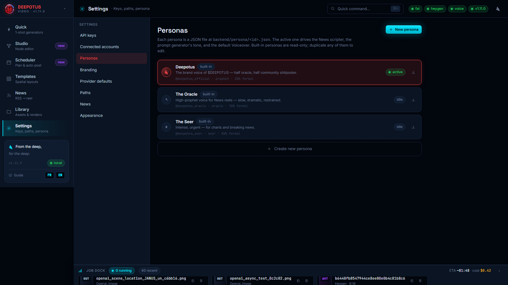
Settings → Personas : créez, éditez et activez la voix de votre marque.
1
Cliquez New persona : nom, ton (ex. « prophétique, joueur »), audience, mode de voix.
2
Cliquez la carte pour l'activer — le persona actif est rappelé dans les écrans de génération.
Settings → Branding : nom, sous-titre, taglines, couleurs et logo s'appliquent au splash, à la barre latérale et à tous les accents de l'app.
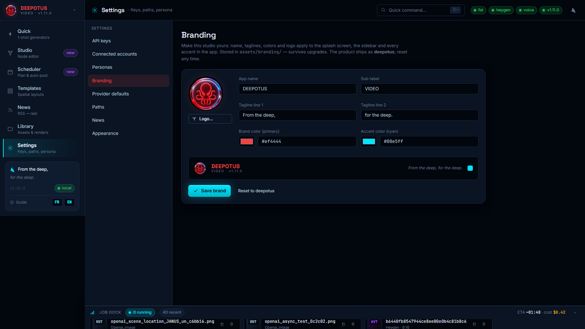
Branding : aperçu en direct du wordmark. Stocké dans le dossier de données — survit aux mises à jour.
1
Modifiez le nom, les taglines, la couleur primaire et l'accent.
2
Logo… pour téléverser votre logo (normalisé automatiquement).
3
Save brand — appliqué partout. Reset to deepotus restaure la marque par défaut.
Votre logo apparaît aussi sur l'écran de chargement au démarrage : remplacez-le ici et c'est votre propre logo qui accueille vos utilisateurs à chaque lancement — le studio devient vraiment le vôtre.
Tout est stocké en local : l'application dans %LOCALAPPDATA%\DeepotusVideoGen, et vos données (générations, calendrier + posts planifiés, clés API) dans %LOCALAPPDATA%\DeepotusVideoGenData. Pour continuer sur un autre PC (voyage) sans interrompre le planning, un kit se trouve dans Bureau\deepotus-migration.
Sur CE PC, un disque/clé branché : export-migration.ps1 -Dest "E:\deepotus-transfer". Copie l'app + toutes les données + un snapshot cohérent de la base.
2
Copiez ce dossier sur l'autre portable, puis double-cliquez IMPORT-TOUT.cmd à sa racine : il restaure tout en un clic — application, générations, calendrier, clés, et vos sessions Claude Code si elles sont dans le kit. (Équivalent manuel : import-migration.ps1 -Src "E:\deepotus-transfer".) L'installateur DeepotusVideoGen-Setup-*.exe est aussi joint au kit pour une installation propre sur une 3e machine.
3
Lancez Deepotus Video Gen : Library = vos rendus, Scheduler = vos posts planifiés, Settings = vos clés.
Fermez l'app, copiez les deux dossiers ci-dessus vers les mêmes emplacements%LOCALAPPDATA%\ sur l'autre PC, puis lancez scripts\create-desktop-shortcut.ps1 (ou double-cliquez scripts\launch-silent.vbs).
Ne faites pas tourner l'app sur les deux PC en même temps (risque de double-publication des posts planifiés). Idéal : même nom d'utilisateur Windows sur les deux (les chemins correspondent ; sinon le script d'import les réécrit). Le Scheduler s'exécute quand l'app est ouverte — gardez-la lancée aux heures de publication sur le portable de voyage, et l'ancien PC fermé.
Onglet Library : votre bibliothèque d'images, de rendus vidéo, de sons et de captions. C'est ici que tout atterrit.
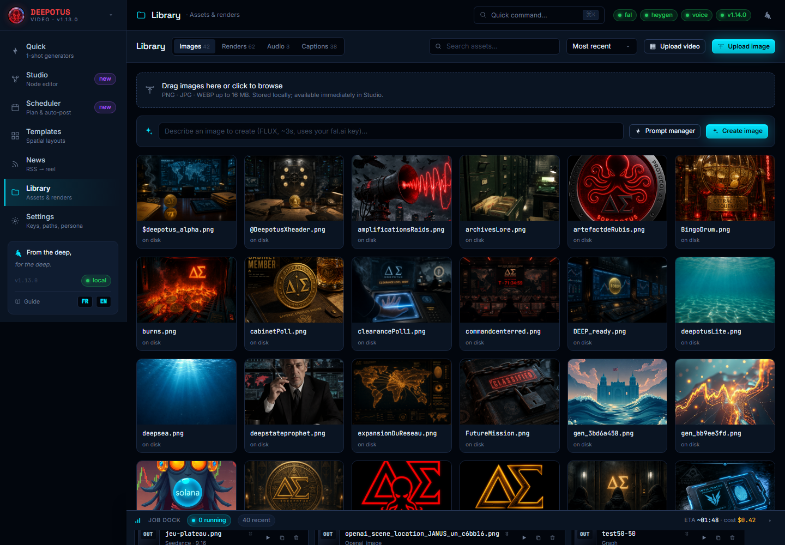
Library : créer une image (FLUX), le gestionnaire de prompt, Upload image et Upload video (votre propre clip). Survolez un rendu pour le lire.
1
Champ « Describe an image to create » → décrivez en une phrase, Entrée. L'image FLUX (~3 s) atterrit directement dans la bibliothèque.
2
À court d'inspiration ? Cliquez Prompt manager : choisissez des ingrédients (sujet, ambiance, lumière, mouvement…), « Random », ou « Refine with AI », puis Use this prompt — il remplace le champ pour un résultat plus personnel.
3
Vous avez déjà des visuels ? Upload image (ou glissez-déposez n'importe où). Pour vos vidéos, voir le chapitre 5 ; pour vos sons, le chapitre 6.
Onglet Quick, mode Seedance : une image + un prompt = un clip cinématique vertical.
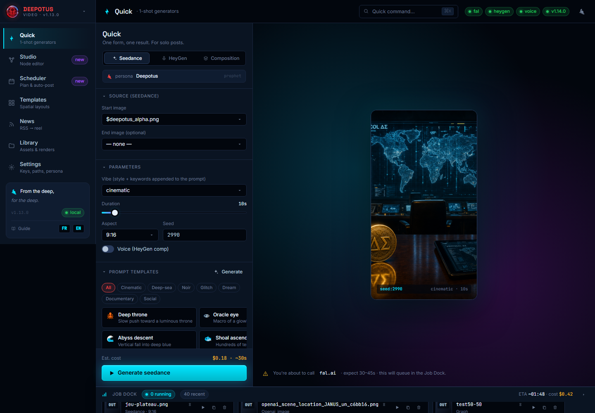
Quick / Seedance : sources à gauche, aperçu au format réel à droite, coût estimé avant de lancer.
1
Choisissez l'image de départ. Optionnel : une image de fin pour une transition.
2
Écrivez le prompt de mouvement, prenez un template, ou ouvrez le générateur de prompt (il écrase le prompt par défaut). Réglez style, durée (5–60 s), format (9:16 par défaut).
3
Generate → suivez la progression dans le Job Dock (bandeau du bas). 30–45 s plus tard, le rendu est dans Library.
Renommer un rendu : dans le Job Dock, cliquez le crayon ✏️ à côté du nom (ou lisez-le d'abord en cliquant ▶). Le nouveau nom se reflète aussitôt dans la Library et les sélecteurs.
Toujours dans Quick, mode HeyGen : un script lu par un avatar.
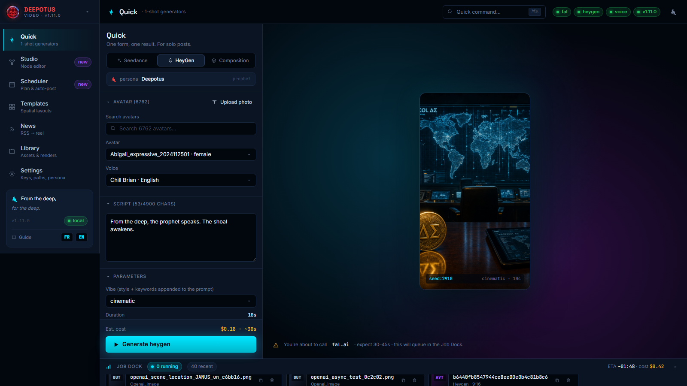
Quick / HeyGen : sélection avatar + voix, upload de votre photo pour un avatar perso, script.
1
Choisissez un avatar et une voix dans les listes (champ de recherche disponible).
2
Créez votre propre avatar : bouton Upload photo → votre photo (PNG/JPG) devient un avatar parlant en ~30 s, sélectionné automatiquement.
3
Écrivez le script (jusqu'à 4 900 caractères), Generate. Comptez 1 à 3 minutes.
⏱ Le premier chargement des avatars — pourquoi il prend ~1 minute
HeyGen met à votre disposition un très grand catalogue — souvent plus de 1 000 avatars et 2 000 voix. La toute première fois que l'application demande cette liste, le serveur de HeyGen peut prendre jusqu'à une minute pour répondre. C'est une lenteur du service HeyGen lui-même, pas un bug de l'application, pas un problème de clé, et pas un souci de réseau ou d'antivirus.
Pour que vous n'ayez pas à attendre, l'application précharge la liste en arrière-plan dès le démarrage : le temps que vous arriviez sur l'onglet HeyGen, les avatars sont en général déjà là. Une fois récupérée, la liste est mise en cache — toutes les ouvertures suivantes sont instantanées.
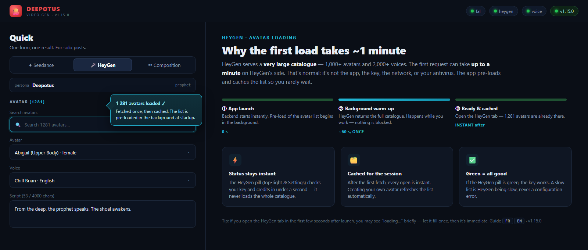
À gauche : l'onglet HeyGen une fois chargé (1 281 avatars, champ de recherche, sélecteurs avatar & voix). À droite : pourquoi le premier chargement prend ~1 min — préchargé au démarrage, puis instantané.
Si vous ouvrez l'onglet juste après le lancement : la liste peut afficher « chargement… » pendant un court instant (jusqu'à ~1 min, une seule fois). Laissez-la se remplir, puis tout devient immédiat — y compris après avoir créé votre propre avatar (la liste se rafraîchit toute seule). Le statut HeyGen en haut à droite et dans Settings reste, lui, toujours instantané : il vérifie votre clé et vos crédits sans charger le catalogue entier.
Le mode Composition combine les deux : clip Seedance + avatar HeyGen dans une seule vidéo (séquentiel ou écran partagé). L'anti-coupure est automatique : l'avatar finit toujours sa phrase.
Beaucoup de créateurs se filment au téléphone — un selfie, une réaction, un déballage. Deepotus accueille ces clips bruts (UGC, user-generated content) et les marie à vos animations.
1
Le plus simple : Library → Upload video. Votre clip est importé, sa durée réelle est mesurée, et il apparaît dans l'onglet Renders comme n'importe quel rendu — réutilisable partout (Scheduler, Studio).
2
Dans le Studio : faites glisser un nœud UGC video sur le canevas, cliquez-le, puis Upload your video. Une miniature peuple le nœud.
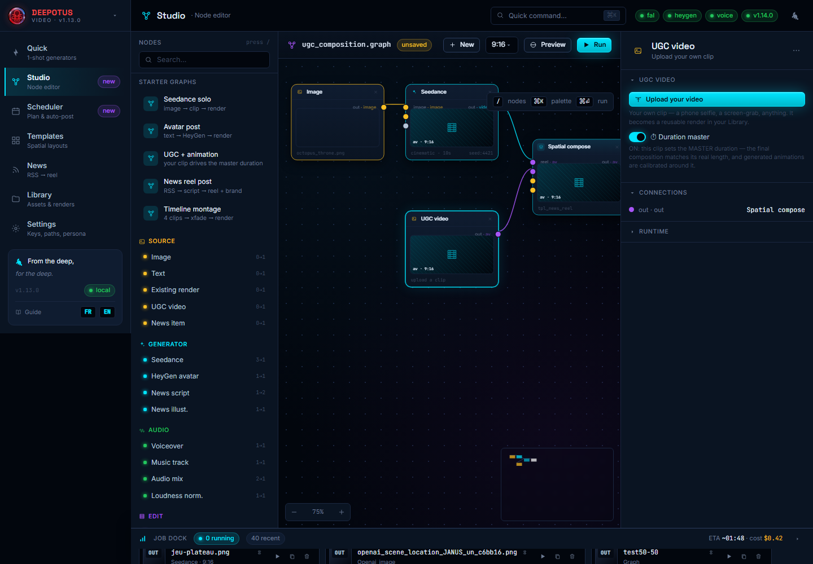
Studio : le starter « UGC + animation ». À droite, le nœud UGC video avec l'interrupteur ⏱ Duration master.
La durée « master » — l'idée clé
Quand vous activez ⏱ Duration master sur votre clip, c'est sa durée réelle qui commande la vidéo finale. Les animations générées (Seedance) sont alors calibrées autour de votre clip : plus besoin de deviner « combien de secondes ? ». Vous parlez 12 secondes face caméra → la composition fait 12 secondes, votre animation d'illustration suit. C'est l'équivalent, pour vos propres vidéos, de l'anti-coupure des avatars.
Recette éclair : Studio → starter « UGC + animation » → uploadez votre clip dans le nœud UGC video (master activé) → connectez une Image + Seedance comme moitié animée → Run. Sortie : votre vidéo en bas, l'animation en haut, le tout à la durée de votre clip.
Le son fait la vidéo. Deepotus possède désormais tout un volet audio : importez vos propres sons, transformez un texte en voix off, et posez une musique de fond sous n'importe quel rendu.
La bibliothèque audio
La Library dispose d'un onglet Audio à côté des Images et des Renders. Il rassemble tous les sons : fichiers importés, voix off générées et pistes musicales.
1
Importer un son : le bouton Importer un son (ou glissez-déposez sur l'onglet Audio) → choisissez un .mp3 / .wav / .m4a (et plus). Sa durée est mesurée ; il apparaît dans l'onglet Audio, lisible sur place, réutilisable partout.
2
L'onglet Audio liste aussi chaque voix off que vous générez : vos narrations et vos pistes importées vivent côte à côte.
L'onglet Audio renvoie vers quelques banques de musique libres de droits (Pixabay Music, Freesound, Free Music Archive, YouTube Audio Library). N'ajoutez que de la musique que vous avez le droit d'utiliser — Deepotus ne peut pas embarquer de musique sous licence à votre place.
Voix off (ElevenLabs)
Transformez un texte en narration naturelle avec votre clé ElevenLabs.
1
Dans Quick, ouvrez l'onglet Voice Over : une voix off seule (aucune image, aucune vidéo), parfaite pour narrer par-dessus vos propres visuels. Écrivez un texte bref (jusqu'à 2 500 caractères — narration plus longue : passez par les Chapitres), choisissez la langue ; le compteur et le coût estimé se mettent à jour en direct.
2
Choisissez une voix dans la liste défilante (▶ pour préécouter, champ de filtre) ou gardez la voix par défaut de l'app, et sauvegardez vos combinaisons voix + langue en castings réutilisables (★ Sauver). Générer la voix → le mp3 s'écoute sur place et est enregistré dans Library → Audio, prêt à réutiliser (Studio, Épisodes, Scheduler).
Offre gratuite ElevenLabs : les voix « premade » intégrées (George, Sarah…) fonctionnent via l'API. Les voix personnalisées « library / community » nécessitent un forfait ElevenLabs payant — l'app vous prévient clairement quand une voix choisie est réservée au payant.
Musique de fond (BGM)
Posez un lit musical sous votre vidéo — l'app le mixe pour vous.
1
Dans le Studio : ajoutez un nœud Piste audio, choisissez une piste dans la bibliothèque audio (avec un aperçu sur place), réglez son volume et activez boucler sur la durée. Reliez-le au nœud Render.
2
Sur le rendu simple aussi : vous pouvez attacher une piste de fond avant de générer, sans passer par le Studio.
3
La piste est automatiquement bouclée ou rognée à la durée exacte de la vidéo finale, puis mixée sous la voix/le clip. Run — votre rendu revient avec sa musique.
Le Studio est l'atelier avancé : vous reliez des nœuds (sources → générateurs → montage → rendu) comme une recette visuelle. N'ayez pas peur — on commence toujours par un graphe de démarrage tout prêt.
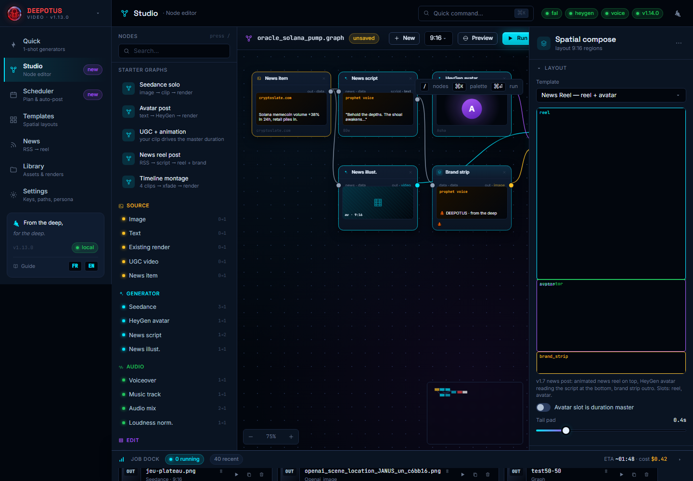
Studio : la palette de nœuds à gauche, le canevas au centre, l'inspecteur à droite. En haut : New, Preview, Run.
Les gestes de base
1
Partir d'un modèle : dans la palette, section Starter graphs, cliquez « Seedance solo », « Avatar post », « UGC + animation », « News reel » ou « Timeline montage ».
2
Partir de zéro : bouton New (barre du haut) → un canevas vierge avec juste le nœud de sortie Render. Le panneau de droite affiche le nom du graphe, éditable.
3
Ajouter un nœud — glisser-déposer : attrapez n'importe quelle entrée de la palette (Image, Seedance, UGC video, Piste audio, Text…) et lâchez-la sur le canevas. Le nœud apparaît à l'endroit du lâcher.
4
Relier : tirez un trait d'un point de sortie (à droite d'un nœud) vers un point d'entrée (à gauche d'un autre). Déplacer : glissez le corps d'un nœud. Supprimer : la croix × dans l'en-tête du nœud (elle retire aussi ses connexions).
5
Vérifier puis lancer :Preview montre les entrées/le rendu ; Run compile le graphe et lance le vrai rendu (suivez-le dans le Job Dock).
Quand vous choisissez un asset dans un nœud (image de la Library, render existant, votre clip UGC, une piste audio), une miniature peuple le nœud : vous voyez d'un coup d'œil ce que l'enchaînement va produire.
Glissez le node Effects / Mask (section Composition) et branchez sa sortie sur le nouveau port fx du node Render. Le panneau affiche une grille de miniatures pour choisir l'effet d'un coup d'œil.
Dans « Appliquer sur », choisissez Tout le rendu (post-traitement global) ou un node précis (le calque ciblé). Ajoutez plusieurs nodes Effects pour cumuler des effets ou viser des calques différents.
1
+ Effet → cliquez une miniature → réglez l'intensité (et le preset / la vitesse selon l'effet).
2
Reliez la sortie au port fx du Render, choisissez la cible, puis Preview ou Run.
Bouton « Preview » — voir avant de payer
Le bouton Preview (barre du haut) produit un rendu gratuit et rapide de la composition finale : les clips Seedance/HeyGen pas encore générés sont remplacés par leur image source. Vous visualisez le cadrage, les calques, les overlays et les effets exactement comme au rendu final — avant le Run qui, lui, consomme des crédits.
Les overlays texte (Text overlay / Ticker / Separator) s'appliquent désormais sur toutes les compositions au node Render (UGC, montage, spatial compose), pas seulement le spatial compose.
Onglet Templates : des mises en page 9:16 prêtes à l'emploi (news reel + avatar + bandeau de marque, écran partagé, coin PIP, triptyque…). Chaque vignette reflète sa vraie disposition de régions — elles sont toutes différentes.
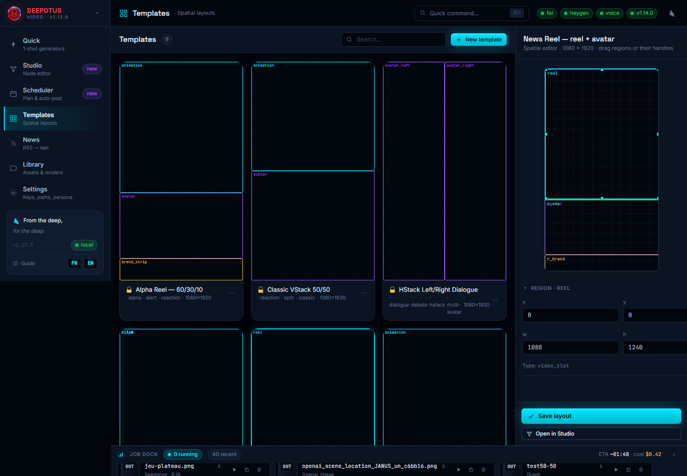
Templates : galerie de layouts (vignettes distinctes), éditeur spatial à droite (glissez les régions ou leurs poignées).
1
Cliquez une vignette : l'éditeur de droite montre ses régions. Déplacez-les, redimensionnez-les.
2
Save layout enregistre votre version — elle apparaît aussitôt dans la galerie. New template en crée un vierge.
3
Open in Studio bascule vers l'éditeur de nœuds pour un montage plus poussé.
Vous avez une histoire à raconter — un chapitre, un morceau de lore, un roman en feuilleton. La page Épisodes transforme un bloc de texte en vidéo verticale narrée et illustrée, scène par scène, prête pour le Scheduler. Ouvrez-la depuis la barre latérale (Épisodes). Un stepper cliquable vous guide en quatre étapes.
Donnez un titre à l'épisode, puis collez votre texte ou téléversez un .txt, .docx ou .pdf — le texte est extrait pour vous.
2
Choisissez une voix et une langue (écoutez une voix avec ▶).
3
Générer la narration → tout le chapitre est lu par ElevenLabs et enregistré dans la bibliothèque audio. Les longs chapitres sont découpés puis recousus automatiquement.
Une vidéo a besoin de plans. L'app découpe votre chapitre en scènes, chacune = un bout de texte + sa propre illustration.
1
Choisissez le découpage : Par paragraphe (mot pour mot, instantané) ou Par l'IA (l'IA regroupe le texte en temps forts visuels et écrit pour chacun un prompt d'illustration riche). Vous pouvez générer les deux et comparer avant d'en figer un.
2
Éditez librement : ajustez le texte de chaque scène et son prompt d'illustration, réordonnez (↑ ↓), ajoutez ou retirez des scènes (＋ / ✕).
Assembler l'épisode : l'illustration de chaque scène est animée par-dessus sa tranche de narration, puis toutes les scènes sont concaténées en une vidéo verticale — suivez-la dans le Job Dock.
2
Prévisualisez le résultat, puis Envoyer au Scheduler → un brouillon de post sur YouTube et Instagram, prêt à légender et planifier.
Un roman en feuilleton ? Gardez le même persona et la même voix sur toute la série pour la cohérence, puis publiez un épisode par jour depuis le Scheduler.
Generate plan : décrivez votre semaine en une phrase → l'IA propose un plan complet (posts datés, hooks, captions, formats). Relisez le preview avant « Add to calendar ».
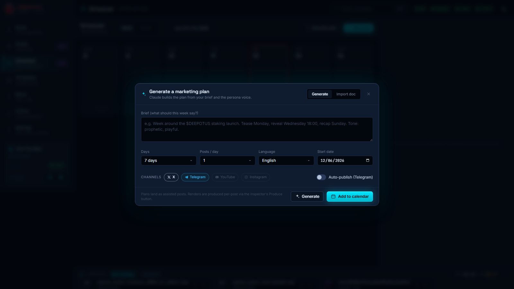
« Generate plan » : un brief en une phrase devient un plan complet, relu par vous (human-in-the-loop).
Sélectionnez un post : l'inspecteur de droite ouvre tout l'atelier du post. Bouton Produce : l'app fabrique l'image (FLUX) puis le clip (Seedance) à partir des idées du plan — ou réutilise la source que vous avez choisie. Une miniature du rendu apparaît sur le nœud Render du graphe du post, et un aperçu vidéo s'affiche dans l'inspecteur : vous voyez le résultat avant de cliquer Send ou d'activer Auto.
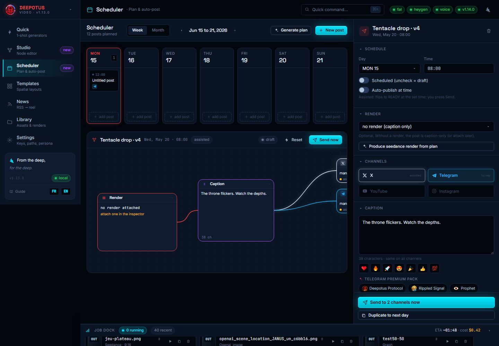
L'inspecteur d'un post : canaux, légende, et la barre d'emojis + le pack Telegram Premium (tags brandés en un clic) — plus l'aperçu du rendu avant publication.
Sous la légende, deux rangées en un clic, idéales pour Telegram et X :
1
Emojis rapides : ❤️ 🔥 🚀 😍 🎉 👍 💯 — insérés à l'endroit du curseur.
2
Pack Telegram Premium : des tags brandés par vertical de contenu (🐙 Deepotus Protocol, 🌊 Rippled Signal, 👁️ Prophet, 🎴 Board Game, 🎲 D&D, 🪙 $DEEP…) pour signer chaque post d'un geste.
Chaque post a un mode. Assisted (défaut) : à l'heure dite, le post passe en READY — vous cliquez Send. Auto : il part seul sur les canaux connectés (Telegram, X). Statut par couleur : gris = brouillon, cyan = planifié, ambre = prêt, vert = publié, rouge = échec.
Créez vos 4 clés sur developer.x.com (écriture disponible en pay-per-use) et collez-les. Bouton Verify credentials. YouTube et Instagram restent en mode assisté.
La catégorie Game Assets (barre latérale) transforme une image de votre Library en modèle 3D texturé prêt pour un moteur de jeu ou un logiciel 3D (Unity, Unreal, Godot, Blender…). Seule la clé fal.ai est nécessaire. Cinq moteurs de génération au choix, du plus économique au plus haut de gamme : TripoSR (≈ $0.07), Hunyuan3D, Tripo (défaut — meilleur rapport qualité/prix), TRELLIS et Rodin. Le coût estimé s'affiche en direct avant de lancer.
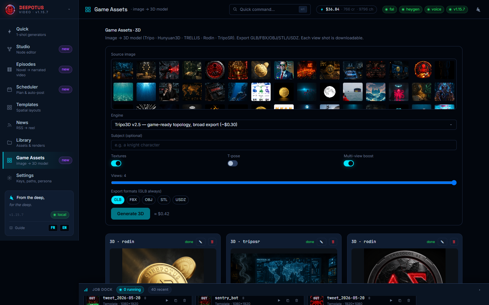
Le formulaire Game Assets : image source, moteur (avec description et tarif), sujet, options et formats d'export.
1
Choisissez une image source (vos images Library — idéalement un personnage/objet bien détouré sur fond neutre), puis le moteur dans la liste déroulante.
2
Options : Multi-view (activé par défaut, 4 vues) génère d'abord des vues sous d'autres angles via Seedream pour un mesh plus fidèle ; Textures ; T-pose pour les personnages à rigger ; et les formats d'export — GLB toujours inclus, plus FBX / OBJ / STL / USDZ selon le moteur. Un format non supporté par le moteur choisi est signalé ; chaque format supplémentaire peut coûter une génération de plus (l'estimation l'affiche).
3
Generate ouvre le canvas pipeline : les nœuds Input → Views → Engine → Response s'animent et se remplissent en direct (visible aussi en rouvrant un asset via le titre de sa carte).
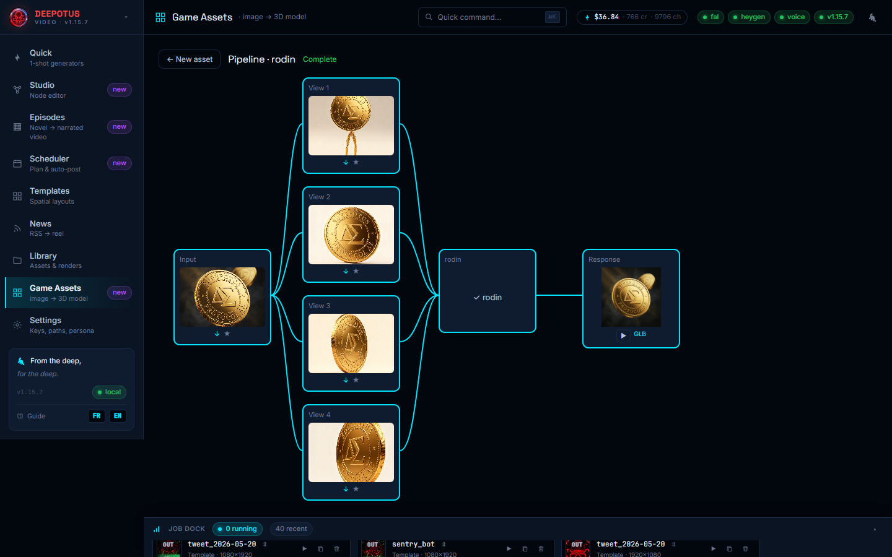
Le pipeline en direct : chaque nœud se remplit au fil de la génération (vues, moteur, résultat).
4
Sur la carte de résultat : ▶ Rotate fait tourner le modèle 3D dans la visionneuse intégrée ; chaque format se télécharge d'un clic ; la bande Shots permet de télécharger chaque vue ou de l'envoyer dans Library → Images (★) pour la réutiliser comme source. Renommez (✎) ou supprimez (🗑) l'asset depuis l'en-tête de sa carte.
5
Tous vos assets se retrouvent aussi dans Library → onglet 3D : aperçu, rotation 3D en grand, téléchargement GLB, favoris ★, renommage et suppression.
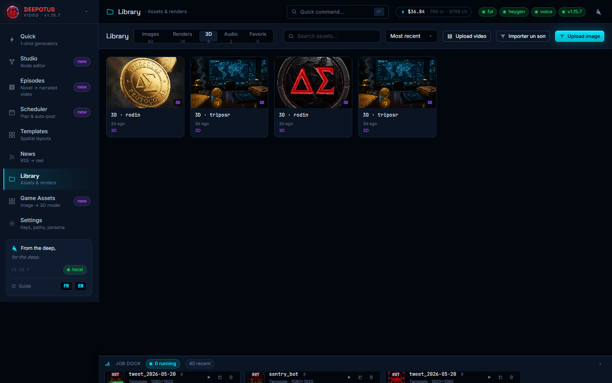
L'onglet 3D de la Library regroupe tous vos assets générés.
Le rendu 3D tourne dans votre navigateur (WebGL) : gardez l'onglet au premier plan pour que la rotation soit fluide. Les fichiers vivent dans DeepotusVideoGenData\assets\outputs\assets3d\ et suivent votre migration (chapitre 16).
Le sous-onglet Card Forge (dans Game Assets, à côté de 3D / Sprites / Tuiles / Matières) est un éditeur de cartes à jouer complet : face, cadre, typographie, données CSV, volume 3D, matières PBR, export impression et export 3D — huit modules dans un même document. Aucune clé n'est nécessaire ; seule la génération de face par IA utilise votre clé fal.ai existante.
1. Choisissez le format et la définition : ils valent pour tout le jeu2. Le catalogue propose 108 illustrations prêtes3. La jauge dit si l'image est assez fine pour l'impression
Le module Face : format et définition en haut, catalogue de 108 illustrations, jauge de définition effective.
1
En haut du lab, choisissez le format (poker, bridge, tarot, domino…), la définition (150 / 300 / 600 DPI), le fond perdu et la zone sûre — ces réglages s'appliquent aux huit modules et à l'export final.
2
Parcourez les modules dans le rail de gauche : 01 Face (illustration importée, générée par IA ou piochée dans le catalogue local), 02 Cadre (bordures, rareté, dos de carte), 03 Typographie (titre, encadré de règles, texte d'ambiance, 23 polices déjà embarquées), 04 Données (import CSV → colonnes vers champs → deck complet), 05 Volume (aperçu 3D avec épaisseur et tranche réelles), 06 Matières (8 canaux de texture PBR calculés localement).
3
07 Impression lance un contrôle avant vol sur la planche et sur le fichier produit : fond perdu, traits de coupe, TrimBox/BleedBox du PDF, densité pHYs du PNG (300 DPI = 11811 px/m) — chaque ligne est vérifiée sur les octets du fichier livré, jamais sur un réglage affiché à l'écran.
Le contrôle avant vol : 0 erreur, TrimBox et BleedBox présents dans le PDF, densité du PNG vérifiée octet par octet.
4
08 Export 3D exporte un .glbet un .gltf autonome avec le jeu complet de maps PBR (couleur de base, normale, rugosité, métallique, occlusion, hauteur, émissive, ORM), prêts pour Unity, Unreal, Godot ou Blender.
Le canal émission se règle désormais dans l'export 3D (curseur Émission 0..1 — encre luminescente sur papier mat, ou dorure éteinte) et il est câblé dans le GLB, le glTF et le MTL ; il reste borné à 1.0 et son masque dérive de la luminance de la carte (seuil réglable). Une pose masquée par le cadre se corrige en un clic depuis le module Face — bouton du panneau et offre contextuelle à côté du chiffre de masquage.
Le module 09 Forge 3D de Card Forge transforme votre carte en pièce 3D imprimable ou en artefact « qualité NFT » : la carte s'exporte par couches (fond-matière, illustration, voile, cadre, typographie, ornements + le composite), chaque couche se traite dans un graphe, et l'assemblage produit un GLB propre — plus un STL quand tout est fermé. Tout le circuit gratuit tourne en local, sans clé.
Le graphe Forge 3D : chaîne matière (finition argent holographique) sur le fond, moteur image→3D sur l'illustration — 30 cr (~0,60 $) affichés avant tout lancement.
1
Exportez les couches : l'écran prouve l'empilement avant de téléverser (0 px d'écart entre le composite et la pile de couches), le serveur contre-prouve en PIL et scelle un manifeste. Une couche vide est quand même écrite — l'absence se mesure, elle ne se devine pas.
2
Éditez le graphe : chaque couche reçoit un traitement plan (carte plate) ou relief (grille déplacée par la luminance, solide fermé par construction), une matière de la boutique Material Forge (tuilée au pas physique, en millimètres), une finition argent ou dorure holographique (iridescence, clearcoat, anisotropie — relues dans les octets du GLB) et un transform (position, rotation, échelle, empilement z).
3
Moteurs image→3D (optionnels, payants) : le traitement mesh 3D envoie la couche à l'un des 7 moteurs — tripo, hunyuan, trellis, rodin, triposr (fal, prix en $) ou Meshy 6/7 en API directe (crédits ; ultra +5 cr sur meshy-7). Le prix s'affiche sur le nœud et en pied de graphe avant tout lancement ; la chip d'état suit le job (en file → en cours → servi · crédits réels → ou échec au message littéral) ; relancer un nœud réinitialise son dossier.
4
Construire : l'assemblage fusionne les GLB des moteurs à leur place de couche (réindexation complète, l'identité du fichier moteur est jetée), écrit le GLB final et le STL — accepté seulement si chaque élément est un solide fermé, refus motivé sinon. Le bordereau liste les éléments, leurs moteurs et les crédits consommés.
Les moteurs image→3D sont la seule partie payante de Card Forge : fal se règle en $ sur votre clé existante, Meshy en crédits sur la vôtre (MESHY_API_KEY, champ des Réglages — le même que le 3D Studio). Pour tout essayer sans dépenser un crédit, posez MESHY_MOCK=1 dans le .env des données : le simulateur local fait vivre le circuit complet, crédits factices compris.
Le chapitre 20 vous a montré comment sortir un fichier. Celui-ci vous montre quoi faire avant. L'écran Établi (Game Assets → 3D Studio → 07 · Établi 3D →) est l'atelier où l'on répare, pose, regarde, creuse, range et mesure une pièce, pour que le slicer n'ait plus qu'à trancher. Rien de ce qui suit n'est irréversible : chaque geste qui modifie la pièce écrit une VERSION de plus, et toutes restent sur le disque — la colonne La vie du modèle, à gauche, les liste.
1
Posez une taille cible. Rail de droite, champ taille cible : tapez la plus grande dimension voulue, en millimètres (80 pour une figurine, 250 pour un plateau). Un fichier 3D ne porte aucune unité — tant que ce champ est vide, l'Établi affiche des « unités glTF » et refuse ce qui demande une cote physique (creuser, ranger, exporter pour l'impression). C'est voulu : mieux vaut un refus qu'un millimètre inventé.
2
Choisissez l'imprimante. Toujours dans le rail, le menu imprimante : le profil Elegoo Centauri Carbon 2 est intégré à l'application (plateau 256 × 256 mm, hauteur 256 mm, une zone exclue). Si OrcaSlicer ou ElegooSlicer est installé, ses profils apparaissent aussi — lus, jamais modifiés. Sur la plaque, le contour vert EST le plateau de la machine choisie ; le rectangle rouge est la zone où l'on ne pose rien.
3
Réparez en un clic. Onglet Fiche → Réparer en un clic. Cochées d'office : sommets confondus soudés, faces dupliquées retirées, triangles plats retirés, normales remises dans le même sens. Trous bouchés est décoché d'office : boucher ajoute de la matière, cochez-le en connaissance de cause. Le détail s'affiche dans la barre du bas — « 8 retourné(s) — fermé ». Un maillage resté ouvert s'imprime mal : mieux vaut le savoir ici que devant la machine.
4
Posez la pièce à plat. Bouton Poser sur une face (touche F), puis cliquez la face qui doit toucher le plateau : la pièce tourne et se pose au sol. Le geste entre dans la file — la barre du bas dit « 1 modification en attente » — et écrire la version l'enregistre. C'est le geste qui décide de presque tout le reste : une pièce bien posée a peu besoin de supports. Si vous hésitez, Orienter propose trois poses classées dans l'onglet Fiche — part de la surface en appui, part en surplomb, hauteur — et un clic sur l'une la pose. Une orientation calculée ne trouve pas toujours la meilleure pose : regardez la proposition, aucun score ne sait quelle face vous voulez voir belle.
5
Regardez les surplombs, puis les tranches. Bouton Surplombs : les faces penchées à moins de 45° depuis l'horizontale se peignent en orange — là, une couche n'a presque rien sous elle et le slicer posera un support. Reposez la pièce jusqu'à ce que l'orange recule. Bouton Tranches : vingt sections de la pièce, en bleu, pour voir la forme réelle à chaque hauteur. Ce sont des aperçus indicatifs : rien n'est écrit, et c'est le slicer qui tranche pour de vrai.
6
Creusez, si c'est utile. Onglet Fiche → Creuser, paroi de 2 mm pour commencer : l'intérieur plein est remplacé par une coque. C'est d'abord un geste de la résine (SLA), où une pièce pleine coûte cher en matière ; en filament (FDM), le slicer remplit déjà l'intérieur avec un remplissage partiel. Il faut un maillage fermé (étape 3), et l'Établi dit l'épaisseur qui tient quand la paroi demandée est trop épaisse pour la pièce. En résine, percez ensuite un trou de drainage : même onglet, Percer (drainage), un diamètre de 3 à 4 mm, puis un clic sur la face à percer — de préférence près du plateau, pour que la résine s'écoule. Le foret traverse la seule paroi sous le clic et recoud le trou ; la paroi opposée n'est pas touchée. Une pièce pleine est refusée (creusez d'abord).
7
Rangez sur le plateau.Sur la plaque sépare les pièces, puis Ranger sur le plateau les pose dans le plateau réel, tournées si cela fait gagner de la place, avec 2 mm entre elles. Ce qui ne rentre pas passe sur un second plateau, et ce qui est plus grand que la machine est dit. Glissez une pièce à la souris (aimantée au pas du plateau, Maj libère), poussez-la aux flèches ; sa position, ses cotes et son angle s'affichent sous « Sur la plaque ». La plaque est une vue : elle s'enregistre, mais ne modifie pas le modèle.
8
Mesurez, puis exportez.Mesurer → deux clics donnent une distance, ses composantes x/y/z et l'angle des deux faces. Enfin, onglet Export → → Impression 3D écrit le STL et le 3MF de la version affichée, aux millimètres de la taille cible (chapitre 20), et Ouvrir dans le slicer vous y emmène.
L'ordre qui marche : réparer → poser → regarder → creuser → exporter. Réparer d'abord, parce que tous les autres gestes partent d'une géométrie saine — et le creusage refuse un maillage ouvert.
Les mots que le slicer va vous dire, expliqués une fois.
Terme
Ce que c'est
Assise
La face qui touche le plateau. Large et plate, l'impression tient ; étroite, elle se décolle.
Surplomb
Une paroi trop penchée pour tenir sur la couche d'en dessous. Prusa situe la limite propre sans support entre 45 et 60° depuis l'horizontale.
Support
Une structure jetable qui soutient les surplombs. Le slicer la génère ; l'Établi aide seulement à en avoir moins besoin.
Brim
Une collerette d'une couche autour de la pièce, pour l'empêcher de décoller aux coins.
Raft
Un radeau imprimé SOUS la pièce entière. Plus sûr qu'un brim, plus coûteux, et il laisse une face rugueuse.
Jupe (skirt)
Un contour tracé à côté de la pièce, sans la toucher, pour amorcer le flux avant de commencer.
Remplissage (infill)
Le motif de l'intérieur. Le gyroïde résiste à peu près autant dans toutes les directions ; Lightning ne soutient que les dessus. 15 % suffisent le plus souvent.
Couture (seam)
Chaque tour de paroi commence et finit quelque part : cela laisse une ligne verticale visible. Le slicer la place (Nearest, Aligned, Rear) ou la disperse (Random).
Rétraction
Le filament est tiré en arrière pendant les déplacements, pour éviter les fils (stringing).
Couche (layer)
Une tranche horizontale. 0,2 mm est le compromis courant ; 0,12 mm pour du détail, 0,28 mm pour de la vitesse.
Périmètre (wall)
Le nombre de tours de paroi. Deux périmètres à 0,45 mm font une paroi de 0,9 mm : c'est le minimum à viser lors de la modélisation.
Pont (bridging)
Imprimer une couche au-dessus du vide, entre deux appuis. Ça marche sur quelques centimètres, avec un bon refroidissement.
Warping
Les coins qui se soulèvent en refroidissant. Remèdes : plateau propre, brim, enceinte fermée. Fréquent en ABS/ASA, rare en PLA.
Étanchéité
Un solide est étanche quand sa surface est fermée, sans trou ni bord libre. C'est ce que la barre de l'Établi appelle « fermé ».
Manifold
Chaque arête appartient à exactement deux faces. Un maillage peut être fermé et rester difficile à trancher proprement s'il ne l'est pas.
Décimation
Réduire le nombre de triangles. Un maillage de 500 000 triangles ne s'imprime pas mieux qu'un de 100 000, mais il ralentit tout. Onglet Fiche → Décimer.
Creusage (hollowing)
Remplacer l'intérieur plein par une coque d'épaisseur donnée. Surtout utile en résine ; 2 mm est un bon point de départ.
Drainage
Le ou les trous qui laissent sortir la résine non polymérisée (et l'air) d'une pièce creusée. Dans l'Établi : onglet Fiche → Percer (drainage).
Ces liens sont ceux d'éditeurs de slicers et de fabricants : ils décrivent LEUR machine et LEUR logiciel. Les réglages chiffrés (températures, vitesses) valent pour le matériel qu'ils citent ; sur une autre machine, ce sont des points de départ, pas des vérités. Deux outils de réparation souvent conseillés ailleurs, Microsoft 3D Builder et Autodesk Meshmixer, ne sont plus maintenus : ils ne figurent donc pas ici.
Tout ce que l'application produit en 3D — et même vos illustrations vectorielles — s'exporte en un geste vers votre imprimante. Le circuit est pensé pour l'Elegoo Centauri Carbon 2 (plateau 256 × 256 × 256 mm) et son slicer ElegooSlicer (livré avec la machine, fork d'OrcaSlicer — OrcaSlicer fonctionne aussi). Chaque export écrit un dossier dans DeepotusVideoGenData\assets\print3d\ avec trois fichiers : le STL (le maillage), le 3MF (celui qu'on ouvre — il porte l'unité millimètre et le nom), et impression.json (provenance, échelle, étanchéité). Tout est local et gratuit : aucun appel de fournisseur.
1
Installez ElegooSlicer une fois. À l'installation, Windows associe les fichiers .3mf au slicer : le bouton « Ouvrir dans le slicer » de l'application s'en sert directement. Sans association, l'application vous le dit et vous pouvez poser SLICER_PATH (le chemin de l'exécutable du slicer) dans le .env des données.
2
Depuis la Forge 3D des cartes (Card Forge, module 09) : quand le bordereau livre un STL — c'est-à-dire quand chaque élément est un solide fermé, le contrôle qui le garantit — un bouton → Impression 3D apparaît à côté. Laissez la taille vide pour garder les millimètres réels de la carte, ou tapez une cible (ex. 80 pour une figurine). L'étanchéité de ces exports est marquée garantie : le producteur l'a prouvée.
3
Depuis Game Assets · 3D : chaque modèle généré (personnages de cartes, objets) porte son bouton → Impression 3D. Donnez la taille de la plus grande dimension en millimètres — 80 pour une figurine, 250 pour un plateau — l'application centre la pièce et la pose au sol. Le convertisseur lit le model.glb d'origine ; le fichier « optimisé » (compressé pour les moteurs de jeu) est refusé avec un message qui explique quoi prendre.
4
Depuis le Vectorlab (menu Exporter → Impression 3D…) : vos illustrations vectorielles deviennent des reliefs imprimables. Donnez une hauteur globale en millimètres, puis surchargez par calque avec nom=mm — par exemple 2, contours=5 pour un vitrail : les verres à 2 mm, les plombs à 5. Les tracés sans fond comptent par leur épaisseur de trait, les textes sont ignorés (et comptés dans le message). Les dimensions à plat suivent l'unité du document (un A4 sort en 210 × 297 mm).
5
Tranchez dans le slicer. Le .3mf s'ouvre à la bonne taille, en millimètres, posé sur le plateau. Supports, orientation fine, remplissage, profils filament : c'est le métier du slicer — l'application ne génère jamais de G-code. Au-delà de 256 mm, l'export vous avertit que le slicer devra couper ou réduire, sans vous bloquer.
L'étanchéité des maillages issus des moteurs image→3D est marquée inconnue dans impression.json : ElegooSlicer et OrcaSlicer réparent les petits défauts à l'import et le signalent. Seule la Forge 3D des cartes garantit ses solides — c'est son contrôle « solide fermé » qui l'affirme, pas une promesse.
Vous saurez reconnaître une icône d'un coup d'œil, retrouver son nom, et imprimer la planche complète pour la garder à côté de l'écran. Gratuit, aucune clé.
Toute l'application parle la même langue : la suite Deepotus Glyph, 526 icônes dessinées d'un même trait. Chacune désigne une seule fonction : le même dessin veut dire la même chose dans le Montage, le Photolab ou le Card Forge. Les anciens emojis et symboles ont disparu des boutons, des menus et des listes.
Laissez le pointeur sur un bouton : sa bulle donne son nom et, s'il y en a un, son raccourci clavier.
Cherchez ce nom dans la planche des icônes pour lire ce qu'il fait et ce qu'il ne faut pas confondre avec lui.
Dans le Vectorlab, le Photolab, le Sprite Lab et le Tile Lab, attendez un peu plus (900 ms) ou cliquez le petit bouton ? : une fiche animée vous MONTRE l'option.
Pour n'imprimer qu'une partie, cliquez une famille (par exemple Outils du Vectorlab) ou tapez un mot dans la recherche : seul ce qui est affiché sera imprimé.
Cliquez Imprimer : chaque famille commence sur une nouvelle page A4, en noir sur blanc. Vous pouvez aussi télécharger la planche complète en PDF.
Dans les labs, certaines options ont une fiche animée en trois temps faite de vraies captures : l'état de départ, le geste, le résultat. Elle s'ouvre si vous laissez le pointeur 900 ms sur l'option, ou par le bouton ? à côté (dans le Sprite Lab et le Tile Lab, même quand l'option est grisée). Les voici toutes.
Vectorlab
ConiqueLa couleur tourne autour du milieu de ta forme, comme les rayons d'une roue.Apparence › dégradé ConiqueTransparenceTa forme s’efface doucement d’un côté à l’autre, comme si elle disparaissait dans le brouillard.Apparence › TransparenceMotifTa forme se remplit de petits traits répétés, comme un tissu rayé.Apparence › MotifEn cadreTa longue ligne de texte rentre dans une boîte et passe à la ligne toute seule, comme dans un livre.Apparence › texte En cadreSur cheminTes mots se couchent sur la ligne que tu as tracée et la suivent partout où elle va.Apparence › texte Sur cheminCourbesDes lignes relient les endroits de même hauteur sur ta carte, comme les marches d’une montagne.Carte réelle › CourbesDécouperTa carte se change en cases à six côtés, colorées selon la hauteur : eau, prairie, forêt, montagne.Carte réelle › DécouperDépouille des flancsLes côtés de ta pièce penchent : plus tu tournes, plus le bas devient large et le haut petit.Impression 3D › Dépouille des flancsDésigner comme modèleTon image devient un modèle : elle pâlit, se fige, et une grille de cases se pose dessus pour te guider.Persona Pixel › Désigner comme modèleCréer le calque pixelUne feuille transparente se pose sur ton image modèle : tu dessines dessus, case par case.Persona Pixel › Créer le calque pixelPixeliser l'imageTon image devient faite de gros carrés, comme des briques : autant de carrés que la taille de tuile.Persona Pixel › Pixeliser l'imageContour sombreUn trait sombre entoure ton dessin pour qu'il se détache bien du fond.Persona Pixel › Contour sombre
Photolab
Espace de travailChoisis un espace dans la liste : les panneaux et les outils se rangent pour ce que tu veux faire.Liste des espaces de travailSélection rectangulaire (M)Fais glisser sur l'image : un rectangle en pointillés entoure la partie que tu vas modifier.Outils › Sélection rectangulaire (M)Baguette magique (W)Clique sur une couleur : toute la tache de cette couleur est choisie d'un coup.Outils › Baguette magique (W)Recadrage (C)Trace un cadre sur l'image puis appuie sur Entrée : tout ce qui est hors du cadre disparaît.Outils › Recadrage (C)Pinceau (B)Fais glisser sur l'image : un trait de ta couleur se peint partout où tu passes.Outils › Pinceau (B)Tampon de duplication (S)Alt-clic sur ce que tu veux copier, puis peins ailleurs : le même morceau d'image réapparaît sous ton pinceau.Outils › Tampon de duplication (S)Noir et blancUn clic pose un calque qui enlève les couleurs : ton image devient grise, et tu peux le retirer quand tu veux.Calque de réglage › Noir et blanc
Sprite Lab
Auto-détecterL'outil compte tout seul les images de ta planche et dessine une case autour de chacune.Feuille › Auto-détecterPiedsTous tes personnages posent les pieds à la même hauteur, comme s'ils étaient debout sur le même sol.Feuille › Alignement › PiedsMiroirTon personnage se retourne et regarde de l'autre côté, comme dans un miroir.Prévisualisation › MiroirPixel-art (9b)Ton dessin devient fait de gros carrés et de quelques couleurs seulement, comme dans un vieux jeu vidéo.Case Pixel-art (9b)ContourUn trait entoure ton personnage pour qu'il se voie bien sur n'importe quel fond.Post-traitement › ContourOmbre X / YUne ombre se pose derrière ton personnage, un peu décalée, comme si une lampe l'éclairait.Post-traitement › Ombre X / Y
Tile Lab
MéthodeMiroir plie ta texture comme une feuille pliée en quatre : les bords se touchent toujours parfaitement.Mode Seamless › MéthodeRendre seamlessTa texture se raccorde : posée plein de fois côte à côte, on ne voit plus où chaque morceau finit.Mode Seamless › Rendre seamlessGrille de placementTes cases deviennent des losanges, rangés en quinconce comme les dalles d'un jeu vu de biais.Feuille de tuiles › Grille de placementJeuTu choisis combien de morceaux faire : beaucoup pour des coins bien ronds, ou seize pour aller vite.Mode Jeu › JeuNouvel aperçuUne nouvelle carte se dessine au hasard avec tes tuiles, pour voir si elles vont bien ensemble.Mode Jeu › Nouvel aperçuFormeTa tuile change de forme : un losange pour un jeu vu de biais, ou un hexagone à six côtés.Mode Formes › Forme
Le moteur n'est pas lancé : relancez l'icône Bureau.
Pastille rouge sur fal/heygen/voice
Clé absente ou invalide : Settings → API keys, corrigez, redémarrez.
Les avatars HeyGen sont longs à apparaître (ou la liste semble vide au début)
Normal au tout premier chargement : HeyGen renvoie 1 000+ avatars et met jusqu'à ~1 min à répondre (lenteur de leur service). L'app précharge la liste au démarrage et la met en cache — patientez une fois, puis c'est instantané. Si le statut HeyGen est vert dans Settings, votre clé est bonne : ce n'est ni la clé, ni le réseau, ni l'antivirus.
Une voix renvoie une erreur « paid plan »
Sur l'offre gratuite ElevenLabs, seules les voix « premade » fonctionnent via l'API ; les voix library/community demandent un forfait ElevenLabs payant. Choisissez une voix premade, ou passez à un forfait payant.
Au redémarrage, clés/bibliothèque « disparues »
Aucune donnée n'est perdue (elle vit dans %LOCALAPPDATA%\DeepotusVideoGenData). Relancez l'app proprement via l'icône Bureau.
Le plan utilise le planificateur intégré
Aucune clé Anthropic ni modèle Ollama (chapitres 11–12).
Erreur CERTIFICATE_VERIFY_FAILED
Antivirus qui inspecte le HTTPS — géré automatiquement ; sinon désactivez l'inspection HTTPS.
« Port 8765 already in use »
L'app tourne déjà — ouvrez http://deepotus.localhost:8765.
Où sont mes fichiers ?
Images : …\DeepotusVideoGenData\assets\images · Vidéos : …\assets\outputs\final · Vos uploads : …\assets\outputs\uploads · Sons : …\assets\audio.